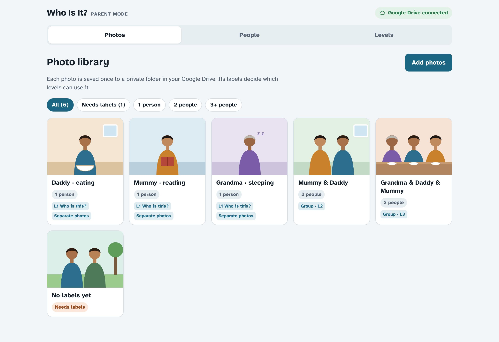
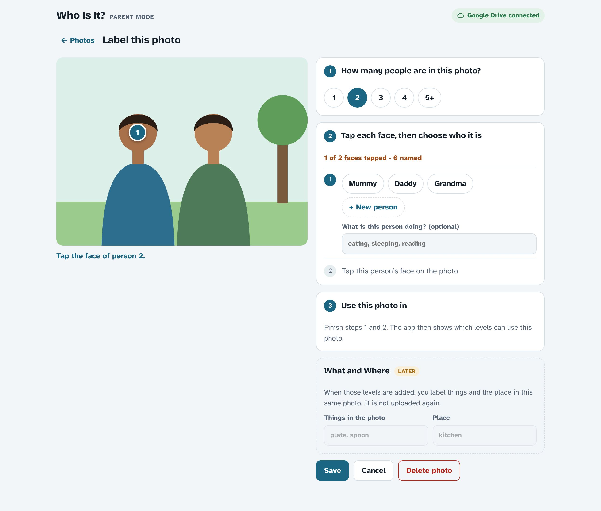
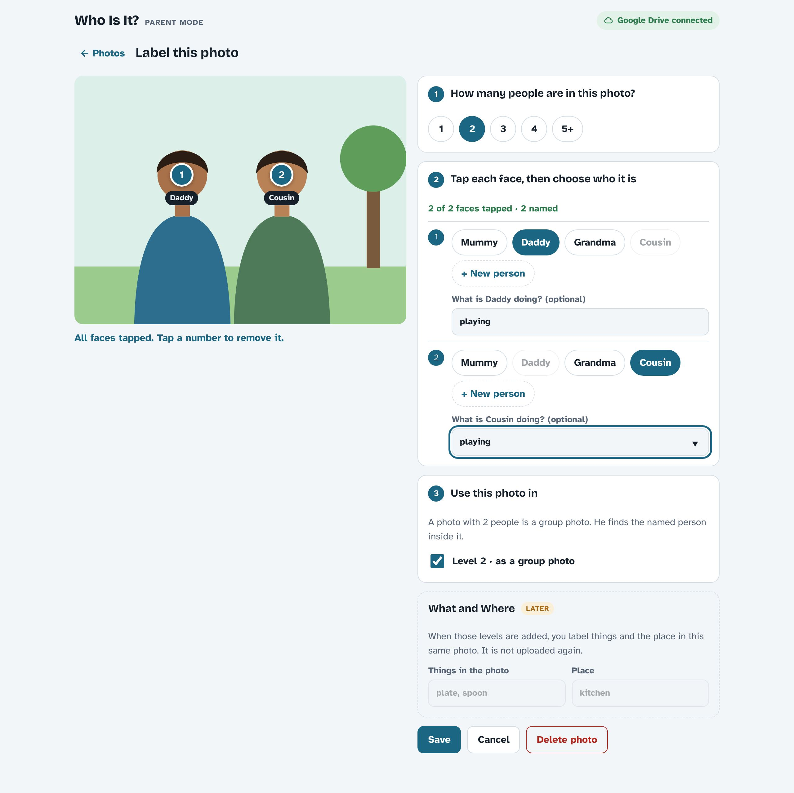
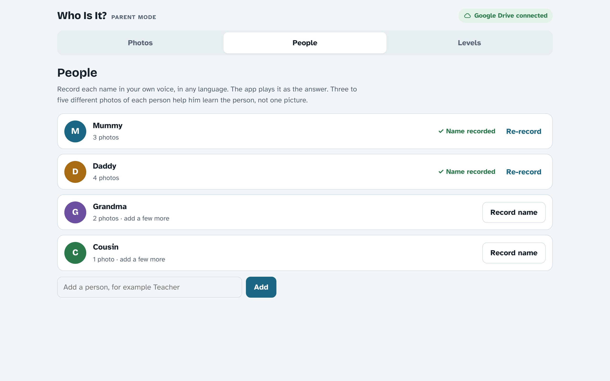
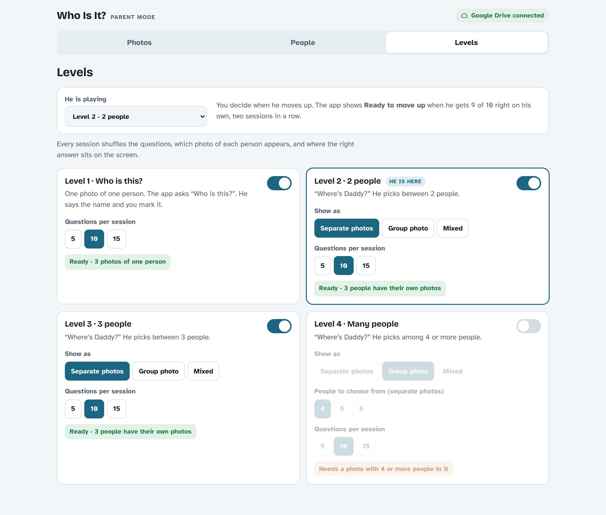

<title>Who Is It? Parent Screens</title>
<meta name="claude:viewport-fit-sides" content="cover">
<link rel="preconnect" href="https://fonts.googleapis.com">
<link rel="preconnect" href="https://fonts.gstatic.com" crossorigin>
<link rel="stylesheet" href="https://fonts.googleapis.com/css2?family=Atkinson+Hyperlegible:wght@400;700&family=Bricolage+Grotesque:opsz,wght@12..96,700..800&display=swap">
<style>
/* Layout: one screen per row, each in a tablet frame, numbered because the screens follow the order a parent uses them. */
:root {
  --bg: #F2F6F8;
  --ink: #16202B;
  --muted: #566374;
  --frame: #1E2833;
  --rule: #D4DCE4;
  --accent: #1B6683;
  --accent-ink: #FFFFFF;
  --font-display: "Bricolage Grotesque", "Segoe UI", system-ui, -apple-system, sans-serif;
  --font-body: "Atkinson Hyperlegible", "Segoe UI", system-ui, -apple-system, sans-serif;
}
@media (prefers-color-scheme: dark) {
  :root:not([data-theme="light"]) { --bg: #0E131A; --ink: #E5EAF0; --muted: #9AA7B5; --frame: #2C3846; --rule: #2A3542; --accent: #72BAD6; --accent-ink: #0B1A21; color-scheme: dark; }
}
:root[data-theme="dark"] { --bg: #0E131A; --ink: #E5EAF0; --muted: #9AA7B5; --frame: #2C3846; --rule: #2A3542; --accent: #72BAD6; --accent-ink: #0B1A21; color-scheme: dark; }

body {
  background: var(--bg);
  color: var(--ink);
  font-family: var(--font-body);
  font-size: 16px;
  line-height: 1.5;
  padding-left: max(16px, env(safe-area-inset-left, 0px));
  padding-right: max(16px, env(safe-area-inset-right, 0px));
}
main { max-width: 1100px; margin: 0 auto; padding-block: 28px 64px; }
h1, h2 { font-family: var(--font-display); text-wrap: balance; margin: 0; }
h1 { font-size: clamp(1.7rem, 1.3rem + 1.6vw, 2.4rem); font-weight: 800; line-height: 1.15; }
.intro { color: var(--muted); margin: 10px 0 0; max-width: 62ch; }
.screens { list-style: none; margin: 32px 0 0; padding: 0; display: flex; flex-direction: column; gap: 44px; }
.screen { display: flex; flex-direction: column; gap: 14px; }
.screen-head { display: flex; gap: 12px; align-items: flex-start; }
.n { flex: none; width: 32px; height: 32px; border-radius: 50%; background: var(--accent); color: var(--accent-ink); display: grid; place-items: center; font-weight: 700; margin-top: 2px; }
.screen-head h2 { font-size: 1.25rem; line-height: 1.3; }
.screen-head p { color: var(--muted); margin: 4px 0 0; max-width: 70ch; }
.device { background: var(--frame); border-radius: 22px; padding: 14px; max-width: 100%; box-sizing: border-box; }
.device img { display: block; width: 100%; height: auto; border-radius: 10px; }
.note { margin-top: 40px; padding-top: 16px; border-top: 1px solid var(--rule); color: var(--muted); font-size: 0.92rem; max-width: 70ch; }
@media (max-width: 520px) { .device { padding: 8px; border-radius: 14px; } .device img { border-radius: 7px; } }
</style>

<main>
  <h1>Parent mode, screen by screen</h1>
  <p class="intro">How parent mode looks on the Lenovo Tab. The drawings stand in for your family photos.</p>

  <ol class="screens">
    <li class="screen">
      <div class="screen-head"><span class="n">1</span><div>
        <h2>Photo library</h2>
        <p>All your photos in one place. Each one shows who is in it, how many people, and which levels use it. New photos show "Needs labels".</p>
      </div></div>
      <div class="device"></div>
    </li>
    <li class="screen">
      <div class="screen-head"><span class="n">2</span><div>
        <h2>Label a photo: count and tap faces</h2>
        <p>Choose how many people are in the photo, then tap each face. Each tap places a number on the face.</p>
      </div></div>
      <div class="device"></div>
    </li>
    <li class="screen">
      <div class="screen-head"><span class="n">3</span><div>
        <h2>Label a photo: choose who it is</h2>
        <p>Pick the name for each face, or add a new person. Optionally say what they are doing. The app then shows which levels can use the photo.</p>
      </div></div>
      <div class="device"></div>
    </li>
    <li class="screen">
      <div class="screen-head"><span class="n">4</span><div>
        <h2>People</h2>
        <p>Record each name in your own voice, in any language. The count shows how many photos each person has.</p>
      </div></div>
      <div class="device"></div>
    </li>
    <li class="screen">
      <div class="screen-head"><span class="n">5</span><div>
        <h2>Levels</h2>
        <p>Choose the level he plays, turn levels on or off, pick separate or group photos, and set questions per session. Green means there are enough photos for that level.</p>
      </div></div>
      <div class="device"></div>
    </li>
  </ol>

  <p class="note">This is a design mock-up. Nothing is uploaded or saved, and the kid's play screens are not shown yet.</p>
</main>
